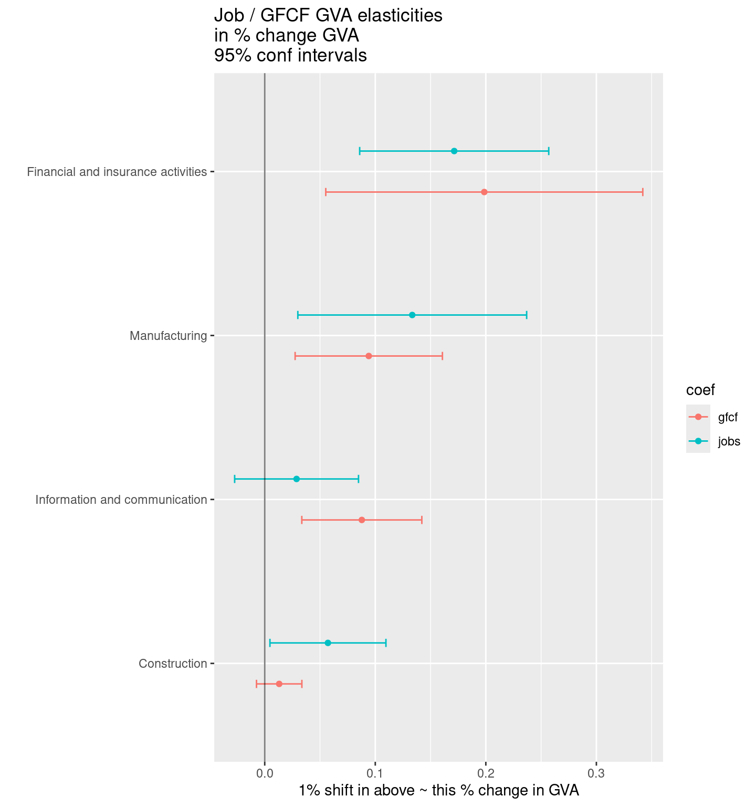
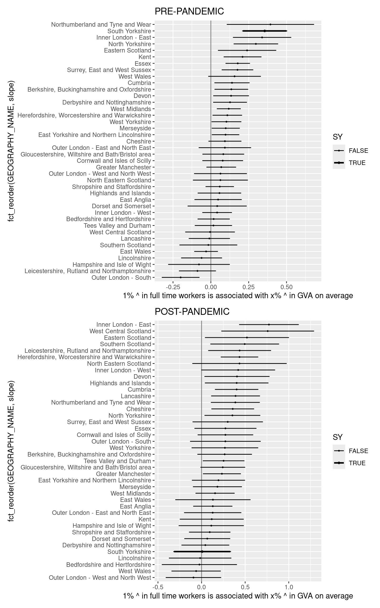
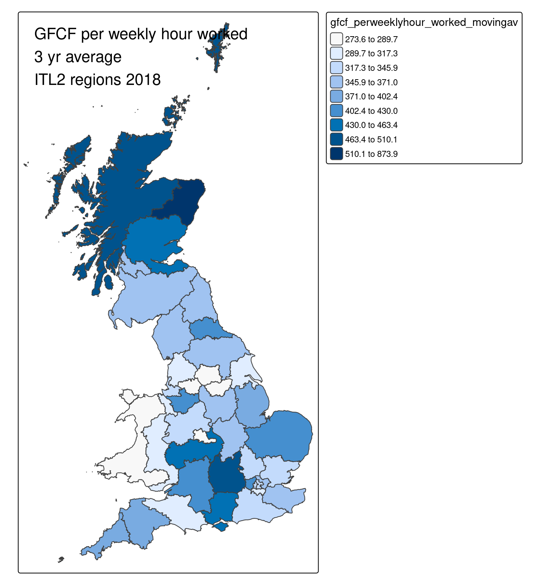

| △GVA ~ △jobs + △gfcf | |
|---|---|
| (Intercept) | −0.010 |
| (0.002) | |
| delta_jobs | 0.236 |
| (0.077) | |
| delta_gfcf | 0.092 |
| (0.025) | |
| Num.Obs. | 160 |
| R2 | 0.154 |
| R2 Adj. | 0.144 |
| RMSE | 0.02 |
Gross Fixed Capital Formation bits and bobs
INTRO
Good regional GFCF data is hard to come by - ONS recently cancelled a scheduled update, delayed indefinitely, due to data issues. Previous sources are incomplete - they only include dwellings and structures at regional level, they’re missing “tangible assets [including R&D spend] other than buildings and intellectual property products.”
Note: this ONS guide lists all the components that go into GFCF.
The only half-good source is via a 2021 user request to ONS, with data from 2000 to 2019 broken down by broad sector groups and ITL1 and 2 zones. But it doesn’t have a lot of quality information in there e.g. it’s not clear if the GFCF values given are inflation-adjusted, or how they’ve been sourced given the difficulties identified in those other datasets.
Here I’ve:
- Used that source and linked to jobs and hours worked to analyse how work and GFCF (in this form) appear to affect regional GVA.
- Also looked at the GFCF per weekly hour worked to see what it says about relative regional investment levels in this dataset.
Model: elasticity of jobs and GFCF v GVA for whole UK
There aren’t enough data points to do this for South Yorkshire separately (model coefs are useless at ITL2 scale) but we can get an idea of the proportionate elasticity impact on GVA of GFCF vs jobs. (Noting this says nothing about causal direction…)
This first dataset is using year-to-year changes in GVA, GFCF and full time jobs for all industries combined, for each ITL2 zone, and pooling.
- delta_jobs: a 10% shift in job numbers ~ a 2.36% GVA shift.
- delta_gfcf: a 10% shift in GFCF overall ~ a 0.9% GVA shift.
Overall, shifts in job numbers appear to impact GVA shifts more.
Here, we pull out four broad sectors that we can get to match across datasets, to get more year-to-year delta data. Unfortunately this still doesn’t get us enough data for ITL2-level separate results, but it confirms the ratio of jobs vs GFCF.
(Sectors are ‘Manufacturing’,‘Construction’,‘Information and communication’,‘Financial and insurance activities’).
Pooling all those sectors, we get these - again, about a 2 to 1 ratio between jobs and GFCF shifts, but smaller for these sectors.
- delta_jobs: a 10% shift in job numbers ~ a 0.9% GVA shift.
- delta_gfcf: a 10% shift in GFCF overall ~ a 0.4% GVA shift.
| △GVA ~ △jobs + △gfcf | |
|---|---|
| (Intercept) | −0.027 |
| (0.003) | |
| delta_jobs | 0.086 |
| (0.021) | |
| delta_gfcf | 0.042 |
| (0.014) | |
| Num.Obs. | 640 |
| R2 | 0.037 |
| R2 Adj. | 0.034 |
| RMSE | 0.07 |
Examining the sectors (at national level) is useful. Manufacturing and ICT GFCF elasticities about the same; maybe higher job elasticities in manufacturing; construction seems odd - why would GFCF GVA impact be so low?

Jobs only (lets us pull out SY)
We can get more information on South Yorkshire by just using jobs, where more sector year-to-year shifts can be pooled to get elasticities.
The pre-pandemic relationship seems to confirm the above - a rough 25% jobs to GVA elasticity, with South Yorkshire’s being at the higher end of that overall (at least until the pandemic breaks that - though probably not enough datapoints there to be conclusive).

GFCF per hour worked in a week
Another way to get insight into this is to find the ratio of GFCF per hour worked in a week. South Yorkshire highlighted. Hover for other place names.
South Yorkshire has had one of the lowest GFCF per hour worked weekly (West Yorkshires remained lower). Where South Yorkshire had £285 per hour worked a week (2017-19 av), Berkshire has £510.
GFCF per hour worked map
A map of ITL2 GFCF per hour worked weekly for 2017-19 average shows clustering of low valuess for Northern ITL2 zones (same pattern is present in earlier map).
